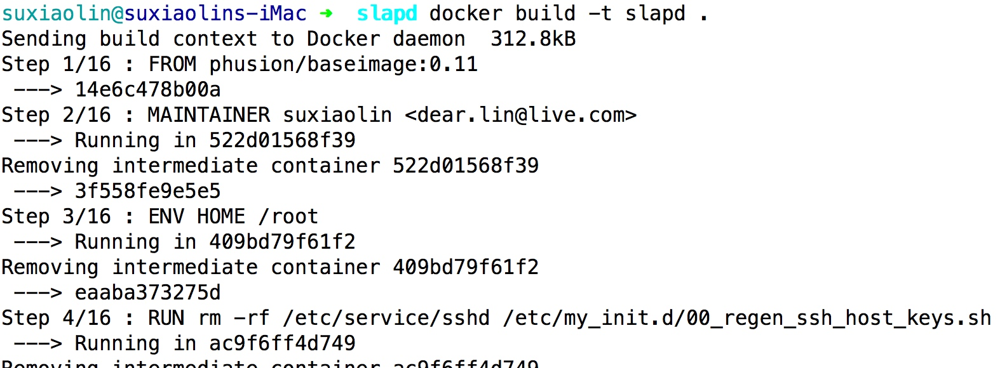
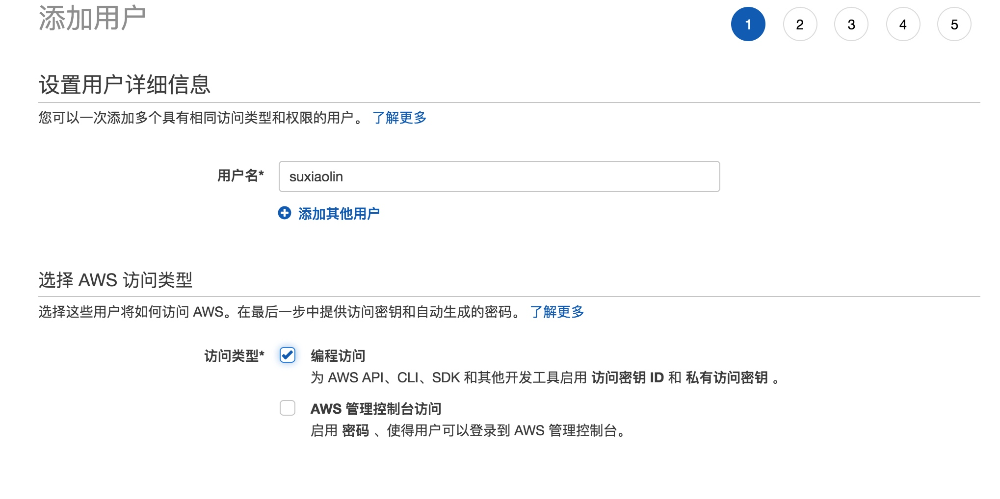

lnmp一键安装包源码分析
通过分析这个lnmp一键安装包的shell脚本，可以了解下shell语言如何有条理的组织大量的代码
项目地址：https://github.com/oneinstack/lnmp
shell脚本在执行运维和自动化任务时经常用到，在解决服务器问题时非常有用
目录结构
| 目录 | 作用 |
|---|---|
| config | nginx服务器里的预定义配置文件 |
| include | 执行实际安装任务的函数定义 |
| src | 下载的源码存放的目录 |
| tools | 执行数据库备份等任务的小工具合集 |
| 根目录 | 入口文件存放目录、安装入口文件install.sh、卸载入口文件uninstall.sh等 |
初始化过程分析
export PATH=/sbin:/bin:/usr/sbin:/usr/bin:/usr/local/sbin:/usr/local/bin
clear
printf "
#######################################################################
# OneinStack for CentOS/RedHat 6+ Debian 8+ and Ubuntu 14+ #
# For more information please visit https://oneinstack.com #
#######################################################################
"
# Check if user is root
[ $(id -u) != "0" ] && { echo "${CFAILURE}Error: You must be root to run this script${CEND}"; exit 1; }
oneinstack_dir=$(dirname "`readlink -f $0`")
pushd ${oneinstack_dir} > /dev/null
. ./versions.txt
. ./options.conf
. ./include/color.sh
. ./include/check_os.sh
. ./include/check_dir.sh
. ./include/download.sh
. ./include/get_char.sh
gogs，jenkins配置通过openldap用户系统进行登录
持续集成的工具链非常多(比如jenkins, gogs, jira, confluence, sonarqube等)，每个系统管理一份用户密码显然是工作量巨大的，配置通过openldap进行登录可以显著减少帐号管理的工作量
下面拿gogs，jenkins举例，配置通过openldap进行联合登录
启动openldap服务器
使用docker工具进行启动，openldap镜像参考：https://github.com/nickstenning/docker-slapd
git clone https://github.com/nickstenning/docker-slapd.git
然后进行docker镜像构建
docker build -t slapd .
操作效果如下

编写docker-compose.yml进行容器管理

使用资源配置工具terraform在aws上构建基础架构
虽然可以直接在aws后台手动创建服务器等资源，但是这个创建过程重复过程成本比较高，所以可以把这个服务器资源使用terraform这个工具来管理，就可以把服务器资源的管理写到文件中了，服务器资源的管理可以通过修改文件实现
terraform支持aws，aliyun，ucloud等服务商，完整的服务商列表参考：https://www.terraform.io/docs/providers/
terraform是一个命令行工具，下载地址：https://www.terraform.io/downloads.html
生成api访问密钥
到这个页面https://console.amazonaws.cn/iam/home?#/users 添加新用户，访问类型设置成编程访问

将用户添加到Administrators组，这样这个用户就有访问aws资源的权限了
使用prometheus + grafana + pushgateway搭建监控可视化系统
虽然prometheus提供了pull的方式来收集数据，但是运维成本比push方式高
下面使用pushgateway快速搭建prometheus的监控可视化系统grafana
安装prometheus + grafana + pushgateway
可以使用docker一键启动，参考：https://github.com/evnsio/prom-stack
启动过程如下：
git clone https://github.com/evnsio/prom-stack.git
cd prom-stack
docker-compose pull && docker-compose up -d
三分钟上手ssh命令批量执行工具ansible
ansible作为目前批量linux机器远控工具的老大、其易用性、管理成本低等远远超过了同类的Fabric等工具。
准备测试机器，这里就拿已有的kubernetes的机器做测试，机器和ip分配参考：java微服务 k8s生产环境搭建, 注意下面案例中的k8s机器的ip段已经改成 192.168.10，机器列表如下
| 机器 | ip |
|---|---|
| K8s-ha-deploy | 192.168.10.140 |
| K8s-ha-master1 | 192.168.10.130 |
| K8s-ha-master2 | 192.168.10.131 |
| K8s-ha-master3 | 192.168.10.132 |
| K8s-ha-node1 | 192.168.10.135 |
| K8s-ha-node2 | 192.168.10.136 |
| K8s-ha-node3 | 192.168.10.137 |
安装ansible
执行下面的命令在部署机上安装ansible
pip install pip --upgrade -i http://mirrors.aliyun.com/pypi/simple/ --trusted-host mirrors.aliyun.com
pip install --no-cache-dir ansible -i http://mirrors.aliyun.com/pypi/simple/ --trusted-host mirrors.aliyun.com
也可以使用docker一键启动
alias ansible="docker run --rm --name ansible -v ${HOME}/.ssh/config:/home/ansible/.ssh/config:ro -v ${HOME}/.ssh/known_hosts:/home/ansible/.ssh/known_hosts:ro -it williamyeh/ansible:alpine3 ansible"
ansible --version


Copyright © 2015 Theme used GitHub CSS. 访问人/ 次